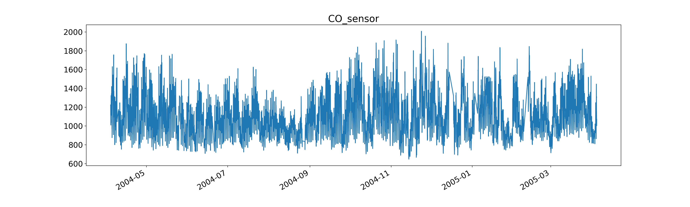
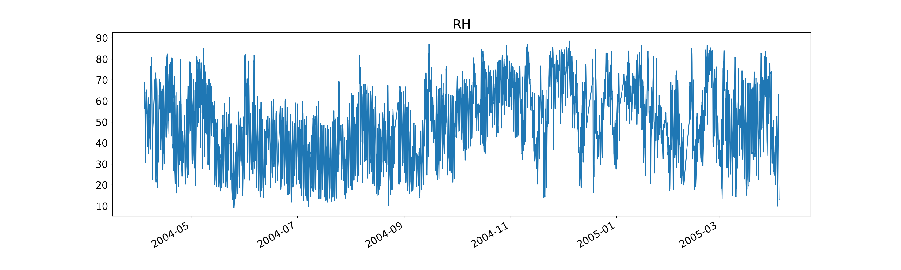
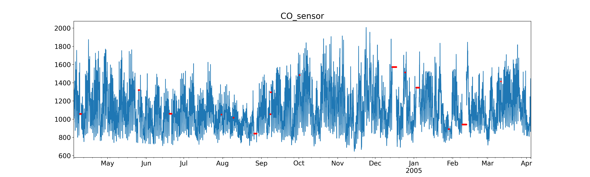
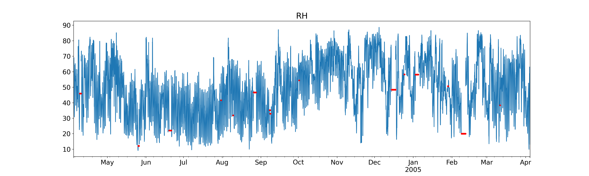
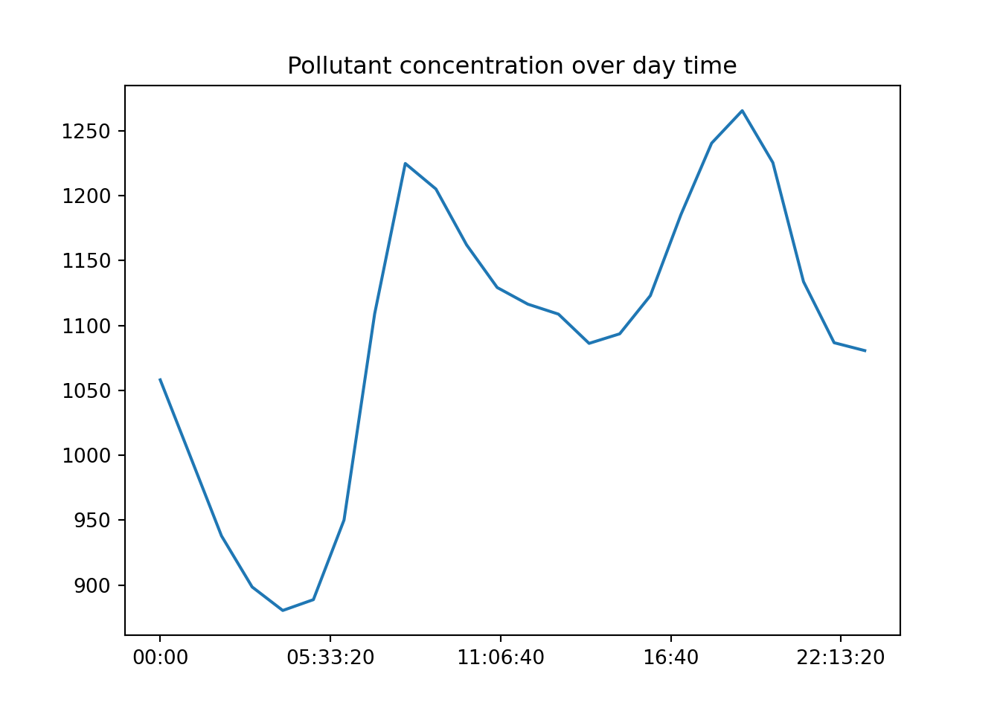

import pandas as pd
import matplotlib.pyplot as plt
import os Forecasting demonstration - EDA
Data loading
file_path = os.path.expanduser("~/Documents") + "\\DS_advanced_website\\data\\example_air_quality.csv"
air_quality_df = pd.read_csv(file_path,
index_col = "Date_Time")
air_quality_df.index = pd.to_datetime(air_quality_df.index)The dataset air_quality_df is loaded from a CSV file and indexed by a column named Date_Time, which represents timestamps of the air quality readings. This timestamp index is essential for time series analysis, allowing us to analyze the data in chronological order. The dataset includes sensor readings such as CO_sensor, which captures the concentration of carbon monoxide (CO) in the air, and RH, which records relative humidity (RH) levels. These two variables provide environmental and pollutant measurements that will be key in our analysis.
for temp_col in air_quality_df.columns.values:
air_quality_df[temp_col].plot(figsize = (20,6))
plt.title(temp_col, fontsize=20) # Increase the title font size
plt.tick_params(axis='both', which='major', labelsize=16)
plt.xlabel('') # Disable x-axis label
plt.ylabel('') # Disable y-axis label
plt.show()

Here, we plot each of the columns in the dataset (CO_sensor and RH) to visually explore the time series data. These plots provide a general understanding of how pollutant levels (CO_sensor) and humidity (RH) fluctuate over time. Larger trends, spikes, or patterns such as seasonality may already be visible, and such visualizations are a useful first step before deeper analysis.
Missing values
To handle missing data in a time series, we first ensure that our data is uniformly spaced by converting the Date_Time index to an hourly frequency using the .asfreq("1h") method. This step introduces explicit gaps for any missing data points, making them easier to detect. This is important in time series analysis because irregular time steps can mislead algorithms, and most forecasting models require data to be at regular intervals.
impute_df = air_quality_df.asfreq("1h").copy()
for temp_col in impute_df.columns:
impute_df[temp_col + "_imputed"] = impute_df[temp_col]
impute_df[temp_col + "_imputed"] = impute_df[temp_col + "_imputed"].ffill()In this block, we handle missing values by forward-filling the gaps (.ffill()), which propagates the last observed value forward until a new valid observation is encountered. This is a common imputation technique for time series data, especially in scenarios where missing values are sparse or values don’t drastically change within short time frames.
We create new columns (e.g., CO_sensor_imputed, RH_imputed) that store the imputed data, while retaining the original columns for comparison and visualization of the missing values.
Next, we will overlay the imputed values onto the original time series to visually highlight where data was missing and how it was filled.
for temp_col in ["CO_sensor","RH"]:
ax = impute_df[temp_col].plot(figsize = (20,6))
impute_df[impute_df[temp_col].isnull()][temp_col + "_imputed"].plot(
ax = ax,legend = False,marker = ".", color = "red", linestyle='None')
plt.title(temp_col, fontsize=20) # Increase the title font size
plt.tick_params(axis='both', which='major', labelsize=16)
plt.xlabel('') # Disable x-axis label
plt.ylabel('') # Disable y-axis label
plt.show()

The purpose of this code block is to visualize the missing data points and the corresponding imputed values. The original data is plotted as a line, and any missing data points that were imputed are marked with red dots. This method of visual comparison allows us to easily inspect where the forward fill occurred and ensures that the imputation technique was applied correctly without distorting the overall time series pattern.
Seasonality
Seasonality refers to recurring patterns or cycles in data that occur at regular intervals, such as daily or yearly trends. By grouping the data by time of day (i.e., the hour) and averaging across all observations for that time, we can observe how pollutant concentrations (like CO_sensor) vary over the course of a typical day. This allows us to detect intra-day seasonality, which is particularly relevant for environmental and pollution data that may exhibit daily cycles due to human activity or environmental factors.
hours_con = impute_df.groupby(impute_df.index.time)[
"CO_sensor"].mean().reset_index()
hours_con.plot(x = 'index', y = 'CO_sensor', legend = False)
plt.title("Pollutant concentration over day time")
plt.xlabel("")
plt.ylabel("")
plt.show()